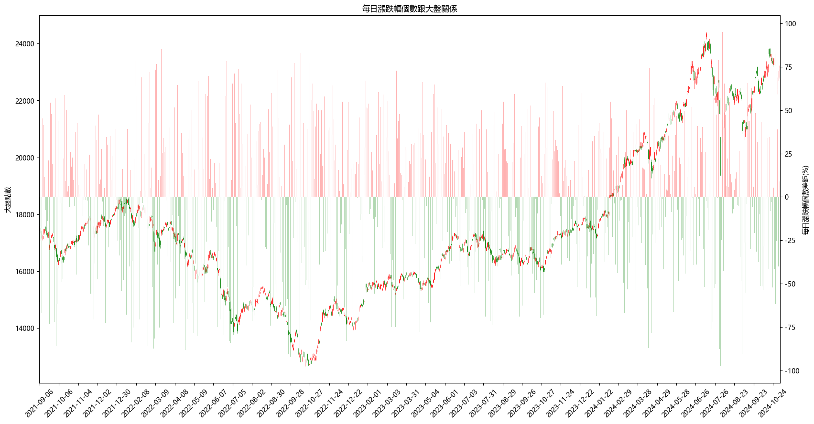
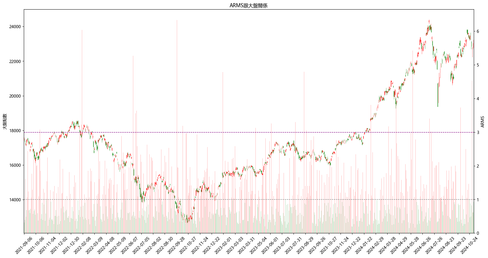
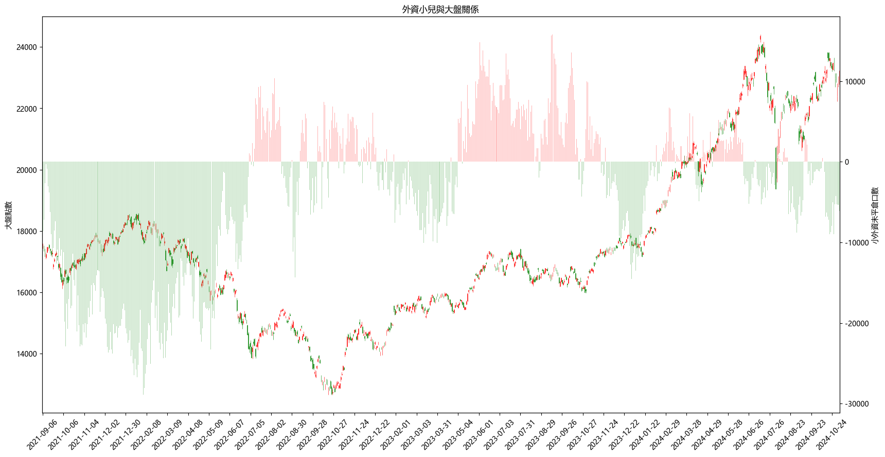
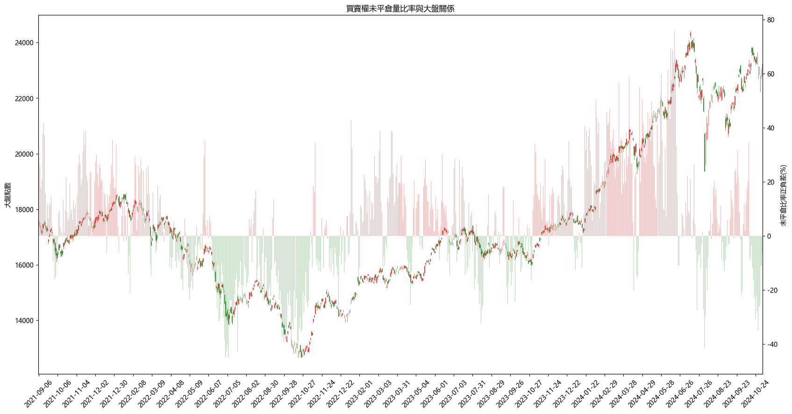
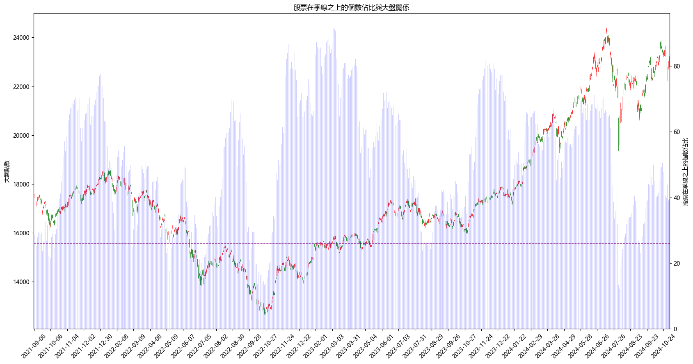

指數策略筆記

買賣權未平倉量比率
(一) 觀察大盤指標
- 每日漲跌幅個數與大盤的關聯
觀察每日漲跌幅個數與大盤的關聯，用上漲個數減去下跌隔數後計算總%數，其實彼此關聯性不高，畢竟資金會輪動，每天漲跌個股不一，可能要針對極值做討論比較有方向。

- ARMS阿姆斯指標
將每日漲跌幅改用ARMS阿姆斯指標，該指標是理查‧阿姆斯(Richard Arms)發明的，或者被稱之為買賣指標(Trading Index)。用來計算上漲股票與下跌股票的那一方擁有較大的成值比重。除了單純的上漲下跌家家數外，還加入成交值作為判斷標準。一般來說ARMS指標都在3以下，如果ARMS指標在1以下代表行情在上升趨勢，大於1就表示下跌的成交比重大於上漲的。
如果單純抓大於3的時間點作為買賣標準其實沒有甚麼明顯趨勢，或許要搭配別的指標一起看比較好

- 小外資與大盤的關聯
小外資的運用在另一篇有介紹，這邊就當個比較圖。

- PUT CALL RATIO與大盤的關聯
PUT CALL RATION是臺指選擇權契約未平倉的PUT口數除以CALL口數，這邊透過%數減100呈現彼此差距。put＝看跌；call＝看漲，但這邊呈現的是未平倉量，所以當這個比率越高時，其實就代表購買 put 未平倉的量＞購買 call 未平倉的量。反之亦然。

- 季線上股票個數與大盤的關聯
還有一個常常在網路上看到別人在用的指標(目前股票在季線上的個數佔比)，假設很多股票都在季線之下，有可能就會是股市的相對低點。
圖中畫出佔比26%位置，如果季線上個股佔比低於26%，都是相對低點。

(二) 觀察大盤指標
待續….